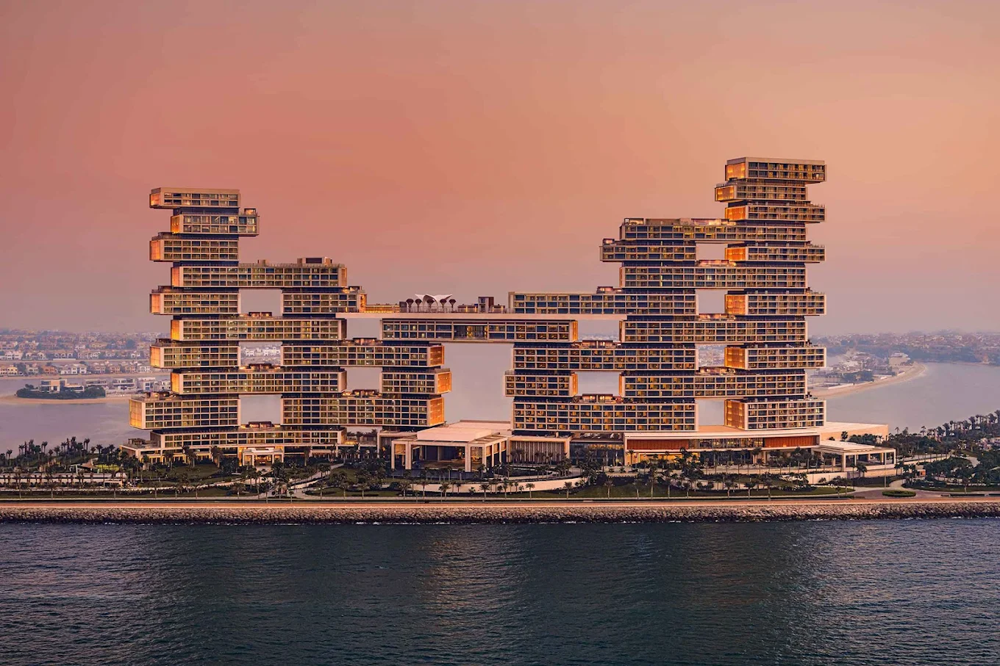
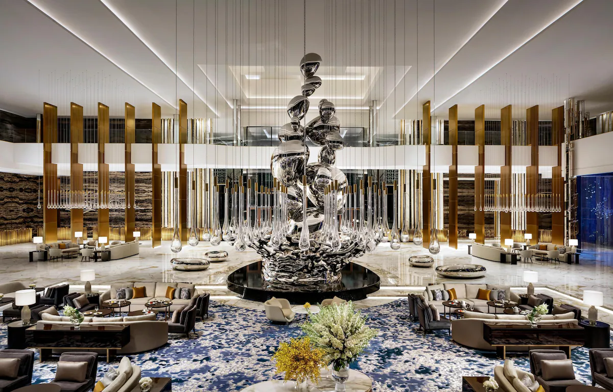
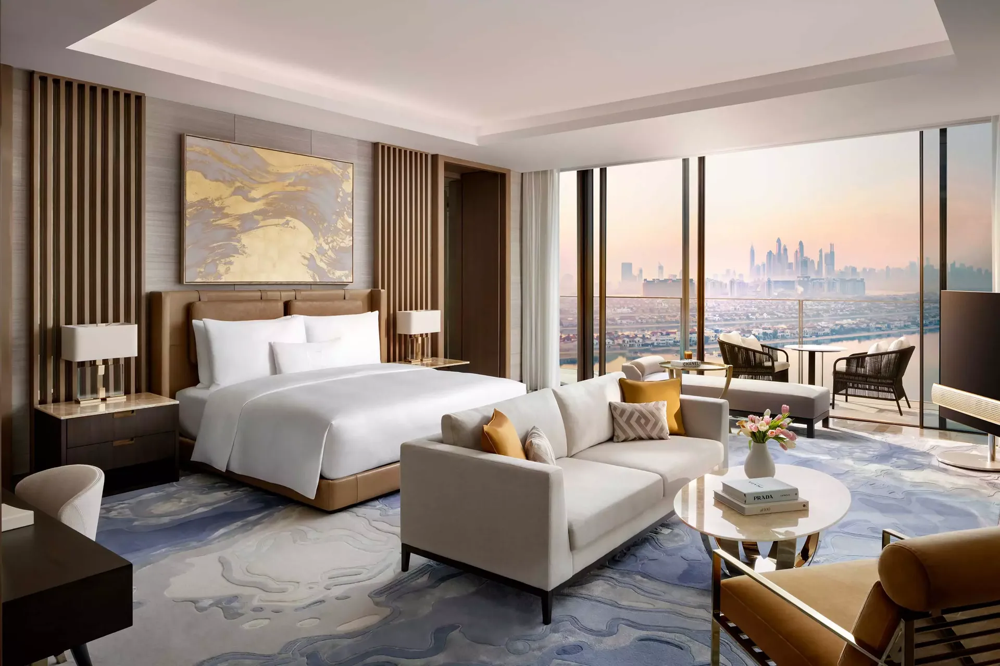
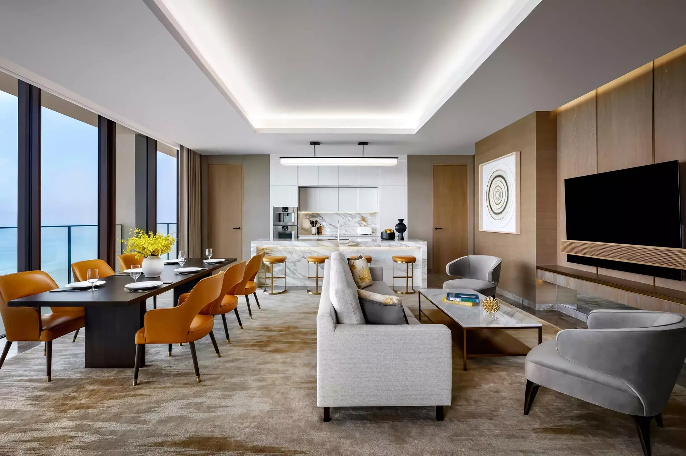
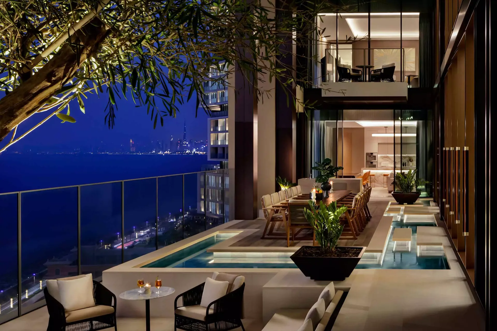
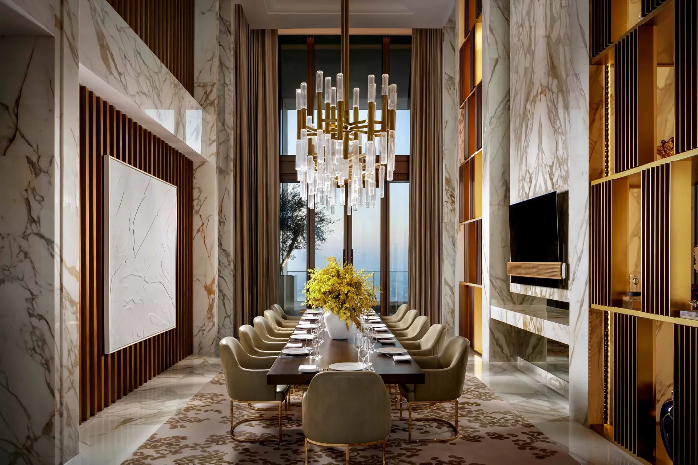

Favorite Hotels
Atlantis The Royal is the Palm hotel I would use when a client wants Dubai at full scale, but still wants the stay to feel polished and worth the spend.
If someone tells me they want to stay on the Palm and do it properly, this is the hotel I would have in the first conversation. Atlantis The Royal has the size, suite depth, restaurant lineup, beach-and-pool energy, and serious wow factor people expect from Dubai, but it still feels more elevated than a lot of oversized resort product. It works for families, it absolutely works for adults and couples, and it has enough inside the resort that the hotel itself becomes a big part of the trip.
What makes it unique
It is the Palm hotel that actually delivers on the hype once you get into the rooms, restaurants, and views.
A lot of Dubai resorts are impressive for five minutes. Atlantis The Royal holds up because there is real depth behind the arrival moment: the Palm-facing views, the amount of dining clients will actually use, the suite product, and the Royal Mansion tier that feels genuinely outrageous in the best Dubai way.
Stay
795 rooms and suites
Officially 795 rooms and suites, including 102 suites and 44 with private infinity pools.
Dining
One of Dubai's deepest lineups
Celebrity dining, pool clubs, terrace moments, and enough range to keep clients on property for days.
Best For
The Palm at the highest level
Families, couples, milestone travelers, and clients who want the resort to feel like the event.
Known For
Royal Mansion, Cloud 22, Palm views
The top-end suite product, the pool scene, and the scale of the whole property are the real draw.



The overall setup
Officially, Atlantis The Royal has 795 rooms and suites, with 102 suites and 44 of those coming with private infinity pools. That already tells you the property was built to have real range, not just one or two headline accommodations. It is a true resort on the Palm Crescent, so you get those wide Gulf views, Palm perspectives, and the kind of arrival that immediately feels like Dubai doing Dubai well.
The reason I would really use it is that the scale does not automatically make it generic. There is enough variety across the rooms, suite categories, restaurants, pools, beach zones, and adults-oriented spaces that you can actually match it to different client types without it feeling like a one-note resort.
Rooms, suites, and the Royal Mansion
The regular rooms and suites are strong on their own, especially if the client wants sea views, Palm views, or a higher-floor perspective back toward the skyline. The private-pool suite inventory is part of what makes the hotel special because it lets a stay feel far more residential and private than people expect on the Palm.
Then there is the Royal Mansion. This is the accommodation that changes the conversation completely. Official property materials describe it as a two-level residence of more than 1,100 square meters, with a vast terrace, private pool, multiple entertaining spaces, and some of the best Palm and skyline views in the city. It is the kind of suite product that only makes sense for a very specific client, but if that client exists, this is exactly the sort of thing that makes Atlantis The Royal worth knowing.




Restaurants, bars, and what keeps people on property
One of the biggest strengths here is that the food and beverage story is actually deep. It is not one famous restaurant carrying the whole resort. Atlantis The Royal has a proper collection of places people genuinely want reservations for, including Jaleo, Estiatorio Milos, La Mar, Dinner by Heston Blumenthal, Resonance by Heston Blumenthal, Ling Ling, Ariana's Persian Kitchen, Nobu by the Beach, Cloud 22, Gastronomy, Food Marquet, Elements Terrace, The Royal Tearoom, House of Desserts, Little Venice Cake Company, Malibu 90265, and Royal Club Sea Lounge.
That matters because clients can genuinely spend a few days here without every dinner feeling repetitive. Couples can build the stay around Ling Ling, Milos, La Mar, or Dinner by Heston, while families still have easier all-day options and enough variety for multiple personalities.
Pools, beach, and family versus adult energy
This is one of the reasons I think the hotel works so well. It is family-friendly, but it does not feel like a family-only resort. Clients traveling with children have the beach, pool time, broad dining range, and the wider Atlantis ecosystem nearby. Adults and couples still have Cloud 22, Nobu by the Beach, the terrace dining, the bigger suite categories, and enough grown-up energy to make the stay feel sexy rather than overly child-driven.
If the goal is to stay on the Palm and have both activity and real downtime without sacrificing luxury, Atlantis The Royal is very hard to beat.
The views
The Palm views are part of the point here. Depending on where the room sits, you are looking out over the sea, back across the Palm, or toward the skyline, and that wide-open perspective is one of the reasons the suites land so well. On the right floor, you really do feel like you are hovering over the Palm with the whole city laid out beyond it.
Who I would book it for
- Families who want the Palm and want the hotel itself to feel like part of the vacation
- Couples who still want glamour, restaurants, and strong suite options without leaving the resort every night
- Celebratory travelers who want a real wow factor hotel
- Clients asking for top-end suite inventory, private pools, or a true trophy stay on the Palm
My honest take
If a client wants the Palm and they want one of the strongest, most complete resort stays in Dubai, Atlantis The Royal belongs right at the top of the list. It does the big Dubai moment well, but the reason it holds up is that the rooms, suites, food, views, and day-to-day usefulness are all actually there.